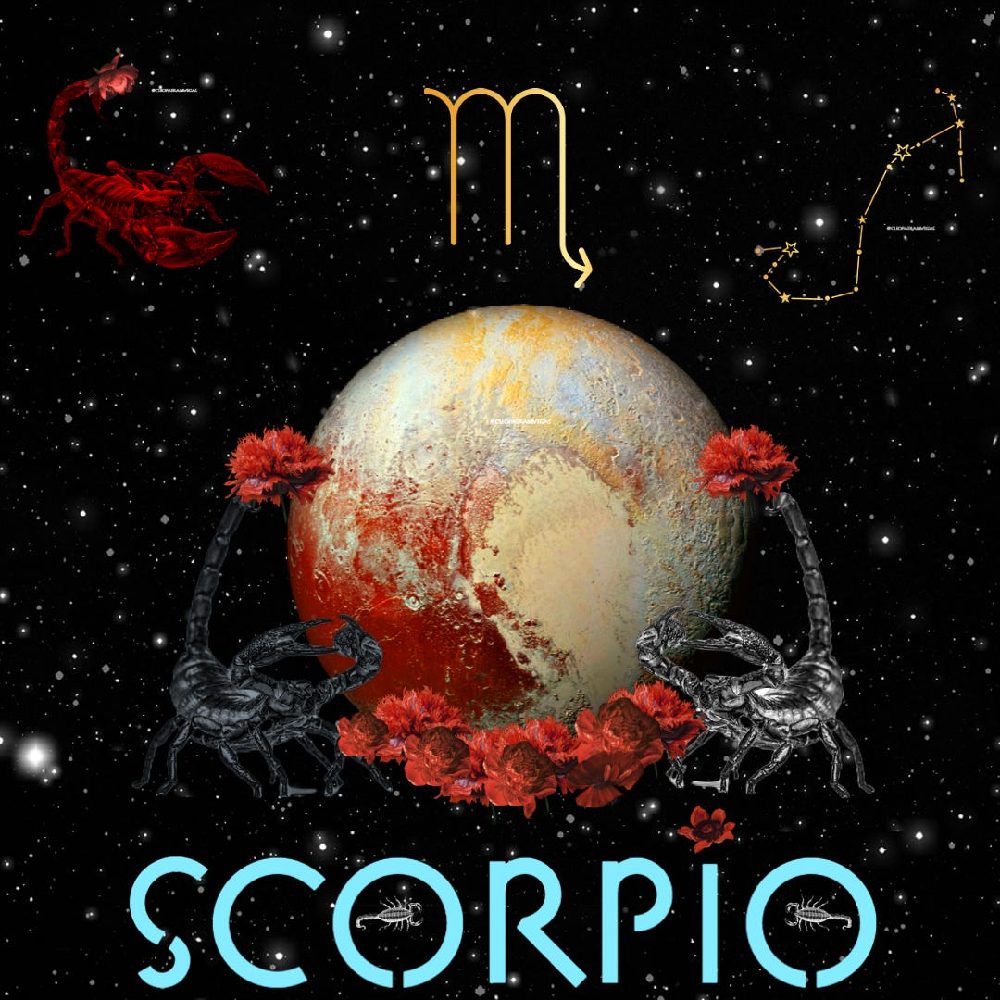
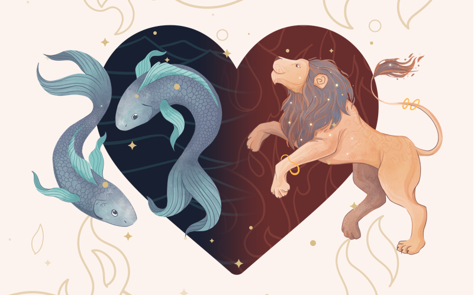

A Deep Dive into our Zodiac Signs, as told by AI
Lucas: The Scorpio
In my opinion (I may be a bit biased), among the twelve horoscopes, Scorpio stands out with its dominating and electric personality. Born between October 23 and November 21, Scorpios are known for their passion, their mystery, and their undeniable presence.
A Glimpse into a Scorpio
Scorpios are the embodiment of depth and complexity. They are bold and ambitious, with a fiery spirit that drives them to lead and conquer. Yet, this intensity is a double-edged sword, as their impulsive nature can sometimes lead to recklessness.
The Passionate Protector
Scorpios are fiercely protective of their loved ones, often displaying a nurturing and sensitive side that belies their tough exterior. Also, their loyalty is unwavering, but this can also manifest as jealousy or possessiveness.
A Case Study in Scorpio Behavior

In an experiment I did with ChatGPT 4-1106-preview, my text messages were analyzed to guess my horoscope. The messages revealed that I was not only intense but passionate too (“I adore her”). I also was perceived to be analytical and protective (“I cared for Leah”). These characteristics align perfectly with the Scorpio profile.
Some of the texts in deeper detail were: “U read my mind was just about to tell u About her I adore her like we had a lot of fun together but I almost got the impression she was using Leah for a place to stay like she would be with us for an hour and then disappear or go to another place with school friends and like only post with them I didn’t care for me I cared for Leah she was amazing but that would’ve gotten on my nerves” “And he so sneakily called his Uber to go he was waiting to find something to get pissed off about so he had an excuse to leave meanwhile he tried to say it was one of us?? Like NOOO U WERE RUDE TO EVERYONE especially you which like don’t even get me started on that like don’t speak to people all slurry and condescending”
I started by asking ChatGPT 4-1106-preview the following: hello, please summarize the characterizations of each of the twelve horoscopes It answered me with this: Aries (March 21 - April 19) * Bold, ambitious, and competitive * Known for their leadership qualities and fiery spirit * Impulsive and sometimes reckless
Taurus (April 20 - May 20) * Practical, reliable, and stubborn * Enjoy the finer things in life and value stability * Can be possessive and indulge in material comforts
Gemini (May 21 - June 20) * Curious, communicative, and adaptable * Known for their duality and versatility * Can be superficial and indecisive
Cancer (June 21 - July 22) * Intuitive, emotional, and protective * Nurturing and sensitive, but also moody * Can be clingy and overprotective
Leo (July 23 - August 22) * Charismatic, confident, and attention-seeking * Natural leaders with a strong presence * Can be arrogant and egotistical
Virgo (August 23 - September 22) * Analytical, organized, and perfectionistic * Practical and detail-oriented * Can be overly critical and have a tendency to worry
Libra (September 23 - October 22) * Diplomatic, charming, and peace-loving * Value balance and harmony * Can be indecisive and avoid conflict
Scorpio (October 23 - November 21) * Intense, secretive, and passionate * Known for their strong will and determination * Can be possessive and jealous
Sagittarius (November 22 - December 21) * Adventurous, optimistic, and independent * Known for their love of travel and freedom * Can be restless and impulsive
Capricorn (December 22 - January 19) * Ambitious, disciplined, and responsible * Hard-working and goal-oriented * Can be aloof and emotionally distant
Aquarius (January 20 - February 18) * Independent, original, and humanitarian * Value individuality and progressive ideas * Can be aloof and detached
Pisces (February 19 - March 20) * Imaginative, compassionate, and intuitive * Highly creative and sensitive * Can be escapist and have difficulty setting boundaries
So I said: Now, given these characterizations, I am going to provide you a compilation of text messages I’ve sent. based on them, please guess my horoscope: and it said….
The Reveal
The AI tool answered with: Based on the characterizations of the twelve horoscopes and the compilation of text messages you provided, it is likely that your horoscope is Scorpio.
Evidence from the text messages:
- Intense and passionate: You express strong emotions and opinions, such as “I adore her” and “I am quite honestly floored.”
- Secretive: You mention that you “almost got the impression” that someone was using someone else, suggesting that you may have kept your suspicions to yourself.
- Possessive and jealous: You express concern that someone was “only posting with” their school friends and not with you, and you also mention that you “cared for Leah” and that it would have “gotten on [your] nerves” if someone was using her for a place to stay.
- Analytical and intuitive: You carefully analyze situations and people, such as when you say “that come across like it was this whole plan that was top secret” and “she caught herself and realized she sent that and it came across as rude.”
While these text messages do not provide a complete picture of your personality, they do suggest that you have some of the key traits associated with the Scorpio horoscope.
I then asked: How confident are you that I’m a Scorpio?
It answered:Based on the text messages you provided, I am moderately confident that you are a Scorpio. The messages exhibit several traits that are commonly associated with the Scorpio horoscope, including:
- Intensity and passion: You express strong emotions and opinions, such as “I adore her” and “I am quite honestly floored.”
- Secrecy: You mention that you “almost got the impression” that someone was using someone else, suggesting that you may have kept your suspicions to yourself.
- Possessiveness and jealousy: You express concern that someone was “only posting with” their school friends and not with you, and you also mention that you “cared for Leah” and that it would have “gotten on [your] nerves” if someone was using her for a place to stay.
- Analytical and intuitive: You carefully analyze situations and people, such as when you say “that come across like it was this whole plan that was top secret” and “she caught herself and realized she sent that and it came across as rude.”
While these text messages do not provide a complete picture of your personality, they do suggest that you have some of the key traits associated with the Scorpio horoscope. However, it is important to note that astrology is not an exact science, and there are many factors that can influence a person’s personality.
If you are interested in learning more about your horoscope, I recommend that you consult with a professional astrologer who can provide you with a more detailed analysis of your birth chart.
The Scorpio-Sagittarius Cusp
I wanted to see if the AI tool could also guess my birthday. So, I asked the tool: can you guess my birthday given what you already know about me?
It answered: Based on the text messages you provided and the fact that you are a Scorpio, I would guess that your birthday is November 15th.
Here is my reasoning:
- Scorpios born between October 23rd and November 21st are said to be more intense, passionate, and secretive.
- The text messages you provided exhibit these traits, such as when you say “I adore her” and “I am quite honestly floored.”
- November 15th is the midpoint of the Scorpio season, which means that people born on this day are said to embody the most typical Scorpio traits.
Of course, this is just a guess, and there are many other factors that can influence a person’s personality. However, I believe that November 15th is a strong possibility given the information you have provided.
I replied with: My birthday is actually November 19th. What does this say about me?
It said this: People born on November 19th are Scorpios with a Sagittarius rising. This means that you have a blend of the passionate and intense nature of Scorpio with the optimistic and adventurous spirit of Sagittarius.
Key personality traits:
- Passionate and intense: You are a passionate and intense individual who is not afraid to go after what you want in life. You are also very loyal and protective of those you care about.
- Optimistic and adventurous: You are an optimistic and adventurous person who loves to explore new things and meet new people. You are also very independent and self-reliant.
- Intelligent and curious: You are an intelligent and curious person who loves to learn new things. You are also very creative and have a great sense of humor.
Strengths:
- You are a strong and resilient person who is not afraid to face challenges head-on.
- You are a loyal and supportive friend who is always there for those you care about.
- You are a quick learner and have a great ability to adapt to new situations.
Weaknesses:
- You can be too intense and passionate at times, which can sometimes lead to conflict.
- You can be too optimistic and adventurous, which can sometimes lead to taking risks that you later regret.
- You can be too independent and self-reliant, which can sometimes make it difficult to ask for help when you need it.
AI did good… at first
I was so surprised to see how quick the tool got to the correct answer. I really saw myself having to prompt it multiple times to get Scorpio but I guess I am my sign through and through!
Darcy: The Leo or Pisces Persona?
 As I continued, I chose my best friend from home, Darcy, to be analyzed. She is a friend whose text messages are a window into her personality. Let’s dive in.
A Glimpse into Darcy
At first glance, Darcy’s messages paint her as a sensitive soul: concerned about perceptions, emotionally open, and introspective. #### “Does the angle of my insta story make me look fat” The AI tool told me that this text, for example, showed vulnerability in worrying about appearance with the sensitive nature of Pisces #### “plus im like in a sad mood dont wanna bother or burden you with that stuff cuz i know u like dont like when i hyper fixate lmao” This text shows Darcy’s hyper-awareness of her emotional state #### “I wanna just be like listen dude we had a great time that day and I don’t know what happened since then but like the way you responded w my grandma made me think to myself that like I just don’t know if you’re the best type of person to be in my life…” Here, Darcy’s intuitive side shines. Pisces are known for their introspection and willingness to leave negativity behind. #### “This is diff than how I used to think about her w my feelings. Like I said before it’s like I don’t like our friendship when it’s like this. It feels forced and I’m too high in my evolution as a human to tolerate those kinds of friendships…” Again, Darcy’s words reflect an introspective side to her
Plot Twist: Darcy’s True Sign Revealed
When I told the AI tool her birthday was August 16th and she was actually a Leo, they were too stunned to speak
They responded with: Leos: the zodiac’s fearless lions, exuding confidence and charisma. They are leaders, not followers, with a strong sense of self. Could she be a Leo with a strong Pisces influence? Or perhaps a Leo who is simply more in touch with her emotions and intuition?
The Conclusion
My chat with the AI tool sheds light on a new possibility: She possesses the confidence and self-assuredness of Leo, while also navigating the emotional depths typically associated with Pisces.
AI and our Zodiacs
What’s clear is that our astrological identities are not solely dictated by the stars under which we’re born. They are also sculpted by the individual journeys we go through and the emotional landscapes we traverse.